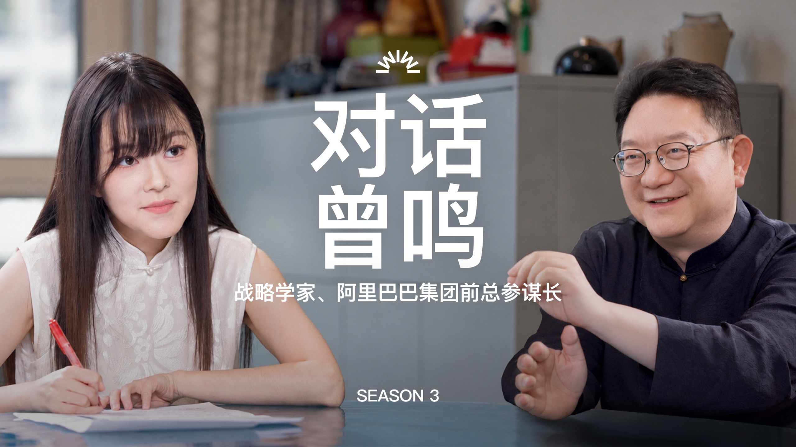

CHAPTER 01产业史观：基础设施成熟之后，机会如何迁移
曾鸣用“基础设施—应用试验—原生应用”解释通用技术的产业化，提醒创业者先判断自己所在的阶段，再决定要建立什么能力。
访谈从阿里巴巴的淘宝、支付宝、阿里云等争议性决策谈起。曾鸣认为，真正改变公司命运的战略常在当时缺少共识；回看成败容易，难处是当时如何把对产业方向的研究与组织行动连在一起。 00:04:37 ↗
三阶段不是三类公司名单
| 阶段 | 曾鸣的判断 | 对当下的含义 |
|---|---|---|
| 基础设施 | 技术被社会接受，能力可计量、可调用，成本持续下降。 | Token 成为使用智能的一种计量方式；模型与算力的供给继续进步。 |
| 应用试验 | 大量新应用尝试，用户与技术共同寻找有效场景。 | Agent 需要真正独立完成任务，单点演示不足以说明长期价值。 |
| 原生应用 | 经历试验后，出现重组需求、交互和商业模式的主流应用。 | 其形态尚未明确，不能预先把当下产品当作最终入口。 |
他拿移动互联网举例：早期智能手机和应用繁荣，不等同于后来出现的主流原生应用。今日头条、推荐算法、带宽与短视频相互作用，才逐步产生抖音一类形态。因此第二阶段不能跳过：它为下一阶段提供方向，也允许参与者在试错中积累能力。 00:12:22 ↗
在他的划分中，2026 年的 Token 共识意味着智能正在成为可按量调用的基础设施；OpenClaw 所展示的独立任务能力，则是 Agent 应用阶段开启的信号。这是他对产业所处位置的解释，不代表基础模型研发已经结束。 00:14:58 ↗
为什么说模型公司可能更像 AI 云
曾鸣把模型公司类比为早期互联网接入服务商 AOL，以及石油产业中的基础加工环节：它们让更多人用上智能，投入和价值都可能很大，但基础能力的供给者未必就是下一轮原生应用的赢家。张小珺以 Codex、Claude Code 追问时，他把编码能力视为基础智能的一种延伸；两人没有把“做应用成功”的可能性说成零。 00:23:35 ↗
他进一步推断，若模型能力逐步同质化、成为关键公共基础设施，行业可能走向少数供给者并受到较强监管。OpenAI、Anthropic 在原生应用阶段“大概率不是大赢家”，是基于历史类比和经济学逻辑的预测；并不等于它们今天没有价值，也不等于它们必然退出市场。 00:31:00 ↗
AOL、Yahoo、移动互联网和能源行业提供的是类比，不是证明 AI 产业必然重复同一路径。具体公司命运、监管方式与利润率尚需未来事实检验。
CHAPTER 02Agent 的新入口：从信息匹配走向能力匹配
第二阶段的核心不是再造一个聊天界面，而是让 Agent 在复杂任务中获得反馈，并让用户可信地找到、调用这些能力。
曾鸣说，简单的素材生成、投放或单次文档制作容易被更强的通用模型覆盖。应用创业要挑选足够复杂、足够重要的任务，让智能体能独立干活，得到真实世界的结果反馈，再改进记忆、上下文管理和交互。只有这样，场景数据才可能形成自己的“智能复利”。 00:40:25 ↗
他把 1990 年代建网站分享信息，与今天封装 Skill、建立 Agent 分享能力相对照。浏览器的价值是统一标准并降低创作和使用门槛；目录与搜索又帮助用户在海量供给中寻找有用的信息。这个类比指向一个尚未被充分解决的问题：谁能让大量 Agent 以可靠、简便的方式被发现和调用？ 00:17:50 ↗
在这个平台上，匹配对象不再只是信息和注意力，而是用户的任务与 Agent 的实际能力。由于调用 Agent 可能产生真实成本或损失，能力验证、信任和责任边界更重要。曾鸣预想会出现连接开发者和用户的双边市场，但明确表示自己尚未看到最终形态，也无法给出“AI 时代 Yahoo”或 Agent OS 的具体产品图。 00:49:10 ↗
模型与应用的边界会重新画
张小珺追问“模型吞噬一切”和应用公司是否应自训模型。曾鸣认为，若通用智能持续降价，应用公司无须简单复制基础模型的资本密集型竞争；但任务理解、记忆、上下文、交互和场景算法仍可能形成独立技术路线。模型公司也会尝试应用，能否跨越组织与产品能力的边界仍是开放问题。 00:57:40 ↗
“旧平台难以演化成新平台”是曾鸣关于入口迁移的概率判断。既有公司的渠道、算力和资金仍可能有价值，只是它们不能自动转化为 Agent 时代的事实标准。
CHAPTER 03公司形态改变：从岗位、层级到任务和合伙
他所说的“公司会消亡”，指工业时代的科层制和固定岗位可能衰落；分工、协作和组织仍会存在。
曾鸣认为，AI 让个人可以完成过去需要多人协调的工作，组织内部便可能由“岗位分配任务”转向“围绕任务召集能力”。他描述一些新实验室由成员认领任务、交付结果，决策权更多来自谁能解决问题，而不只是行政层级。新形态的名称和稳定制度还没有确定。 01:08:20 ↗
张小珺追问：如果层级和岗位变少，员工怎样得到激励？曾鸣将答案放在更强的自主性、共同目标与合伙关系中。他同时承认，一个人能力再强也有边界，“一人公司”只是显示 AI 的杠杆，复杂事业仍需要组织、分工和协同。 01:12:00 ↗
| 传统科层制 | 访谈中的可能变化 | 仍需解决的问题 |
|---|---|---|
| 固定岗位与命令链 | 围绕任务和能力调动人及 Agent。 | 质量、责任、授权如何落实？ |
| 职位决定决策权 | 更依赖专业判断与共享上下文。 | 意见冲突时如何形成有效决策？ |
| 工资与晋升为主 | 成员更像共同创造价值的合伙人。 | 贡献、收益与风险怎样分配？ |
为什么他先谈组织、再谈战略？因为环境变化加快以后，少数高层先定路线、其他人执行的方式可能来不及发现新机会。他主张让组织持续感知外部变化、提高决策频率，并让战略从共同讨论和试验中生成；“组织变化”不是单纯裁减管理层。 01:19:55 ↗
优秀与卓越的分界
在创业者层面，曾鸣把优秀理解为把已知方法执行得很好，把卓越放在提出不合常识的方向、验证并真正做成。他强调利他、同理心和较小的自我：若创业者总在证明自己，容易追逐外部认可和已有的正反馈；持续面向使命，才更可能承认自己看错、吸收别人更好的经验。 01:31:20 ↗
他也提醒，非共识与噪音不能靠姿态区分。创业者需要接触更全面的现实信号，深入思考，并在信念和修正之间保持弹性。所谓“卓越”因此不是一句人格赞美，还要看想法能否落实、组织能否学习。 01:36:20 ↗
访谈讨论的是未来组织的方向与受访者观察，不是已被验证的制度方案。固定岗位、劳动保障、责任归属与合伙分配如何改变，视频没有给出完整设计。
CHAPTER 04战略生成系统：让人与 AI 一起学习
在高度不确定的环境中，战略不宜只是一份定期更新的规划；组织要把目标、判断、行动与反馈持续连接起来。
曾鸣沿用“看十年、想三年、干一年”讨论时间尺度：长期愿景给方向，三年左右的里程碑迫使团队思考从现在到未来的几步关键跃迁，当年的行动要对应其中的第一步。问题不在于预测每一步，而在于不能只用线性增长率把今天外推到未来。 01:39:00 ↗
他所说的“战略生成系统”不是请 AI 替 CEO 输出一份战略文件。他把它比作人和 AI 一起训练“组织的小模型”：让任务流与工作流连接成员和 AI，积累对客户、技术、竞争及自身行动的理解，追踪试验和反馈，观察有没有原先想不到的洞察从协作中涌现。 01:45:50 ↗
在这样的组织里，“给足背景，而非单靠控制”比上级逐项下命令更重要。曾鸣认为 AI 可以处理大规模信息，人则仍能提出问题、建立新连接、形成创造性判断；两者都需要看到足够的背景。他把这种文化与未来更像合伙人的组织联系起来。 01:48:10 ↗
不同产业处在不同的战略阶段
对模型公司，他强调规模投入与智能复利，同时警惕能力趋同后价格竞争；对 Agent 公司，他强调尽早进入真实任务，不能只等基础模型成熟；对机器人，他判断目前仍在更早的探索期，数据、泛化和量产都有障碍。先做通用“大脑”还是先从特定场景形成闭环，两条路线在逻辑上都成立，视频并未给出唯一答案。 01:55:20 ↗
机器人部分，他借汽车从试制到福特量产、再到多车型竞争的演化，说明一套战略只在相应阶段有效；又把机器人比作电器，认为不同场景可能出现多种形态。这些比较的用途是提出观察问题：何时真正达到规模化、可负担、可持续使用，而不是推算精确年份。 02:00:00 ↗
若要检验“战略生成系统”，应看团队是否能因真实反馈改变产品与资源配置，而不只是把文档汇总进 AI 工具；若要检验机器人路线，则看场景数据、量产成本与持续使用。
CHAPTER 05巨头的转型边界与个体的创造力
曾鸣的结尾判断是：旧优势可以帮助公司参与下一轮竞争，却不能保证成为新入口；对个人而言，原创地定义问题和组织协作会更重要。
张小珺逐一追问微软、Google、字节跳动、腾讯、阿里巴巴及其他公司。曾鸣区分了“能继续提供 AI 基础设施”和“能做出原生应用入口”：云、芯片、模型或现有用户基础可提供生存与试验条件，却未必带来下一代用户关系。对 Google 等公司的判断均是当时的个人推演，不是已发生的胜负。 02:03:40 ↗
他特别担心把 AI 直接加到旧产品，只得到过渡性的体验。若 Agent 改变人与人、人与商品之间的关系，社交、搜索和电商入口都可能重新定义。反过来，既有公司是否能内部长出新产品，又取决于是否愿意改变原有组织的权力、文化和探索方式。 02:07:10 ↗
访谈还讨论高强度、由上而下的管理是否适合前沿研究，以及中国应用和模型公司的位置。曾鸣多次区分公开可见的技术进展与自己对组织的主观观察；读者不宜将他对任何一家公司的谈话，直接当作该公司内部状况的已证实报告。 02:11:20 ↗
人的差异：从掌握知识到提出新问题
最后，张小珺问：若智能像能源一样可从外部获得，人还有什么差异？曾鸣借德鲁克对生产力与知识工作的历史分析，提出“创造力时代”：可结构化的知识处理可能更多交给 AI，人要发展的是原创地定义复杂问题、看到尚不存在的连接，并让新事物落地的能力。这里的创造力不限于写歌画画。 02:18:17 ↗
他由此谈到教育、工作和组织环境：旧的标准化培养方式可能与未来能力需求冲突；快乐和开放的状态也可能成为创新的条件。访谈最后回到他“快乐的研究员”的自我定位，以及企业总会在效率与新一轮探索之间面临转型。 02:22:40 ↗
产业史观能帮助提出“身处哪个阶段、优势会在哪里失效、下一步该验证什么”，但不能代替对产品、组织和市场的实际检验。模型公司、Agent 入口、机器人与新组织的具体赢家和制度形态，均未在访谈中被证明。